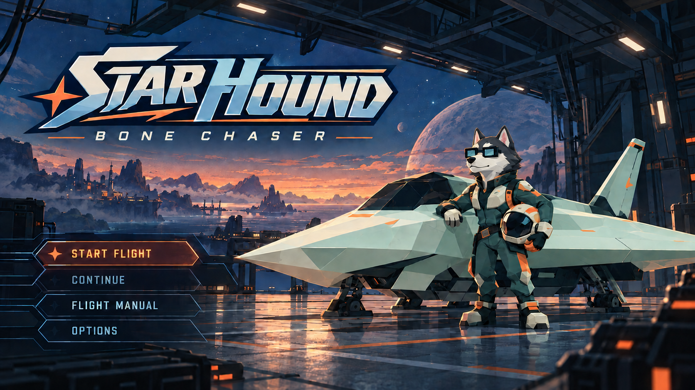

Unable to load the flight engine. Check your internet connection and reload.

STARHOUND · BONE CHASER
↑ ↓ SELECT ENTER CONFIRM
SECTOR 01
THE DEPARTURE
＋
✓CHECKPOINT SAVED
NOW PLAYINGM · NEXT TRACK
HULL INTEGRITY100%3 LIVES · CHECKPOINT 1
SINGLE CANNONHEAT 0% · AMMO ∞FIRE I · COOL I
WASD / ARROWS · STEER SPACE · FIRE SHIFT · BOOST ESC · PAUSE M · NEXT TRACK
ALL LIVES LOST
EVERY DOG HAS
ANOTHER DAY.